Префектура Нагасаки · Гото · еда и ремёсла
Гото на вкус: рыбные котлеты, джин с камелией, масло и ножи кузнеца
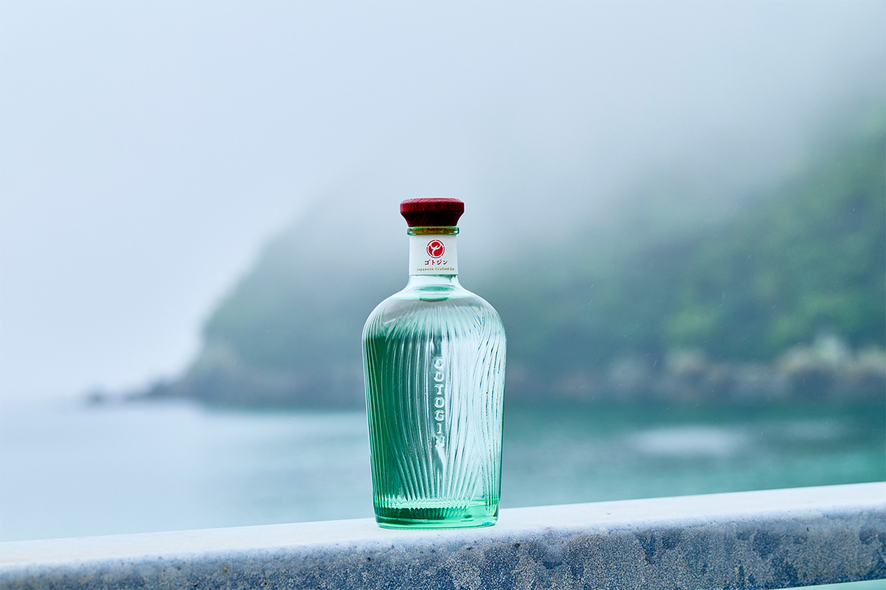
У префектуры Нагасаки самая длинная береговая линия в Японии, и именно изрезанные берега во многом создали здешнюю культуру. Мы приплыли сюда на пароме из соседнего Синкамигото, чтобы проехать по острову Фукуэ от рыбного цеха до кузницы.
Рыба
«Хамагути суйсан»: котлеты из ставриды
Первая остановка на Фукуэ, главном острове архипелага Гото, это фабрика «Хамагути суйсан». Компания делает рыбные изделия больше 80 лет. В фарш идёт свежая рыба с Гото и из Нагасаки, а солят его смесью, в которую добавляют морскую соль с островов.
Главный местный продукт называется «барамон-агэ». Это жареные котлеты из рыбного фарша, в основном из ставриды, с плотным и насыщенным рыбным вкусом: в них чувствуется, как богато море вокруг Гото. В магазине при фабрике продают также камабоко и рыбную ветчину, а в цех можно заглянуть на экскурсию.
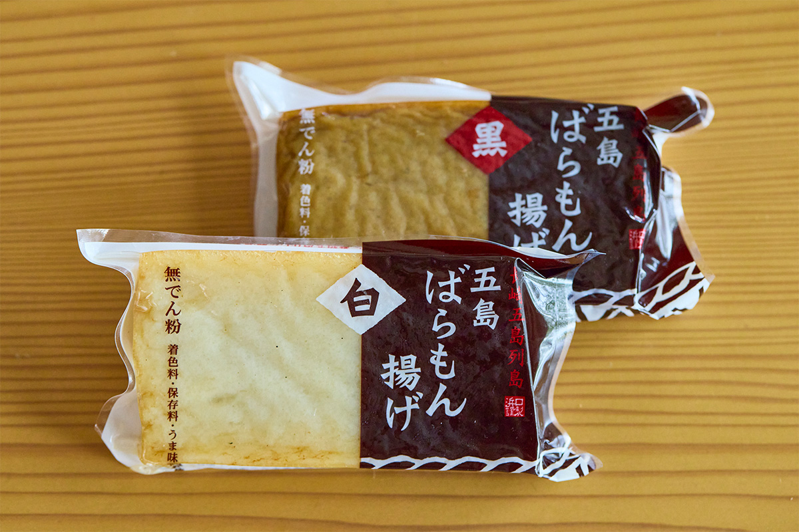
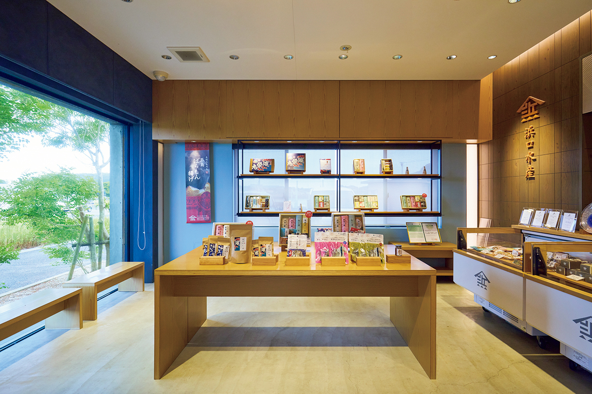
«Хамагути суйсан», магазин при главной фабрике
- Адрес
- префектура Нагасаки, Гото, Томиэ-мати Томиэ, 357-230
- Телефон
- +81 959-86-0032
- Часы работы
- понедельник–суббота, 8:00–17:00
- Выходные
- воскресенье и праздники (цех закрыт и по средам)
- Сайт
- goto-maki.net
Джин
Винокурня «Гото цубаки» в бухте у церкви
Дальше дорога уходит в горы. По узкой тропе, заросшей папоротником, выходишь к маленькой бухте, словно спрятанной от всего мира. Рядом с церковью Хандомари стоит винокурня «Гото цубаки», где делают крафтовый джин. Её основали трое бывших сотрудников крупной пивоваренной компании, которые переехали на Гото.
«Нас привлекли богатая природа, история тайных христиан и доброта здешних людей. В джине 18 ботанических ингредиентов, в том числе семена камелии с Гото»
отвечает за маркетинг винокурни
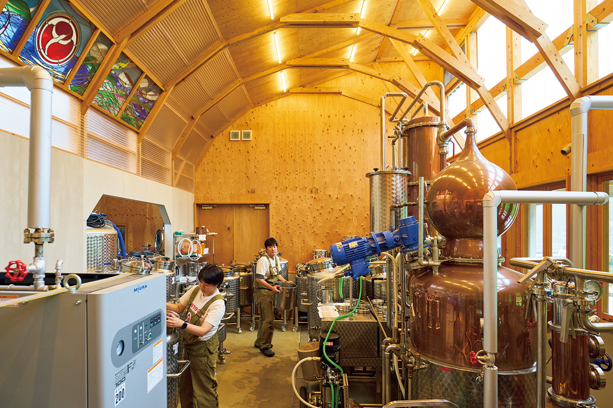
Джин GOTOGIN настаивают на семенах камелии, горной восковнице, юдзу и других дарах островов. В 2026 году бутылка стоила 5500 иен. Вкус у него мягкий, такой же спокойный, как люди и пейзажи Гото. Перегоняют джин в здании, похожем на монастырь, рядом с церковью в бухте, а бутылка в форме бутона камелии хороша сама по себе.
Винокурня «Гото цубаки»
- Адрес
- префектура Нагасаки, Гото, Токи-мати, Хандомари, 1223
- Часы работы
- магазин 10:00–15:00
- Выходные
- воскресенье, новогодние праздники
- Сайт
- gotogin.jp
Камелия
Tsubakino: масло, которое отжимают сами
Чтобы самому отжать масло камелии, стоит заехать в Tsubakino, специализированную лавку камелиевого масла. Его ценили в Японии и как пищевое ещё в эпоху Хэйан (794–1185). Золотистое масло с густым ореховым вкусом сразу заполняет рот.
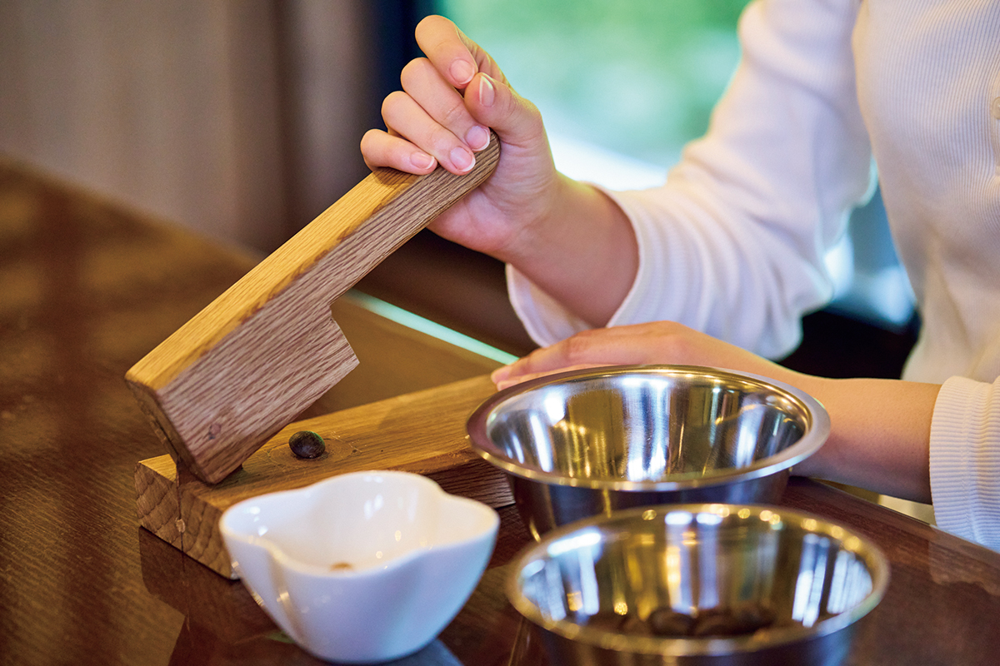
Хозяйство само выращивает около 1500 камелий, плоды собирают вручную и отбирают только хорошие семена. Из масла делают мягкую для кожи косметику и пищевое масло, которым на острове пользуются с давних времён. Здесь же проводят мастер-классы по отжиму пищевого масла.
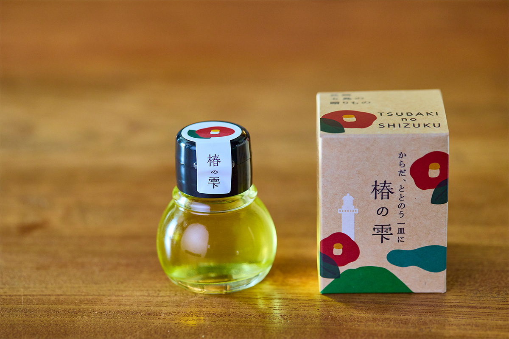
Tsubakino
- Адрес
- префектура Нагасаки, Гото, Ёсида-мати, 2498
- Телефон
- +81 959-75-0411
- Часы работы
- 13:00–18:00
- Выходные
- воскресенье, понедельник, новогодние праздники
- Сайт
- tsubakioil.jp
Ремесло
Кузница «Миядзаки кадзия»: ножи с камелией
В кузнице «Миядзаки кадзия» можно увидеть, как мастер куёт и скручивает железо, чтобы на клинке проступил узор, похожий на волны Гото. Кузнец учился ремеслу в Фукуоке и в мастерских по всей Японии. Каждый нож он делает по традиционной японской технологии кузнечной сварки, и путь от заготовки до готового клинка занимает около 40 операций.
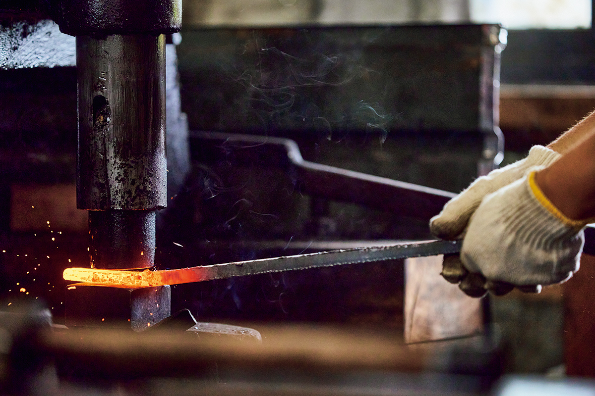
Самые известные ножи мастерской носят клеймо в виде цветка камелии. Обратите внимание и на новую серию, где волны Гото переданы узором на клинке.
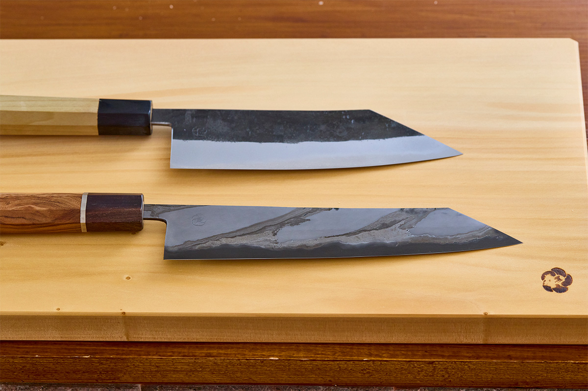
«Миядзаки кадзия»
- Адрес
- префектура Нагасаки, Гото, Такада-мати, 1876-1
- Телефон
- +81 959-72-5566
- Часы работы
- 8:30–19:00
- Выходные
- воскресенье
Ночлег
Goto Retreat ray by Onko Chishin: море из окна
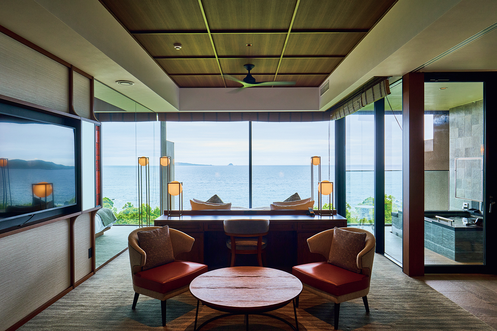
В отеле Goto Retreat ray by Onko Chishin все 26 номеров смотрят на море, небо и зелень. В 2025 году в открытые ванны номеров провели воду из Аракава-онсэна, источника, который давно любят на Гото, и теперь в них можно лежать, глядя на море.
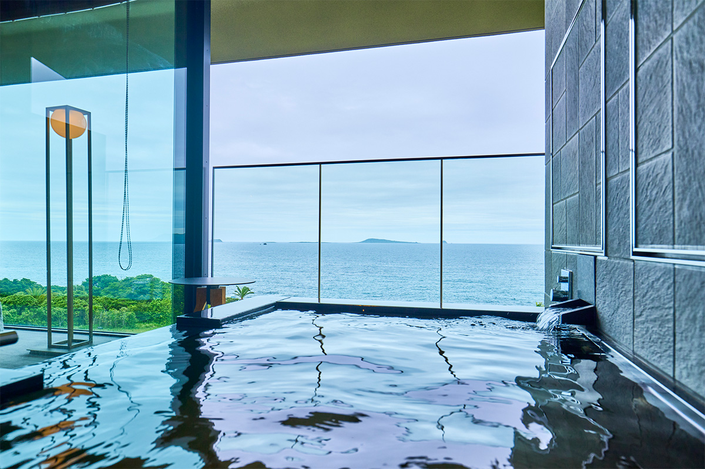
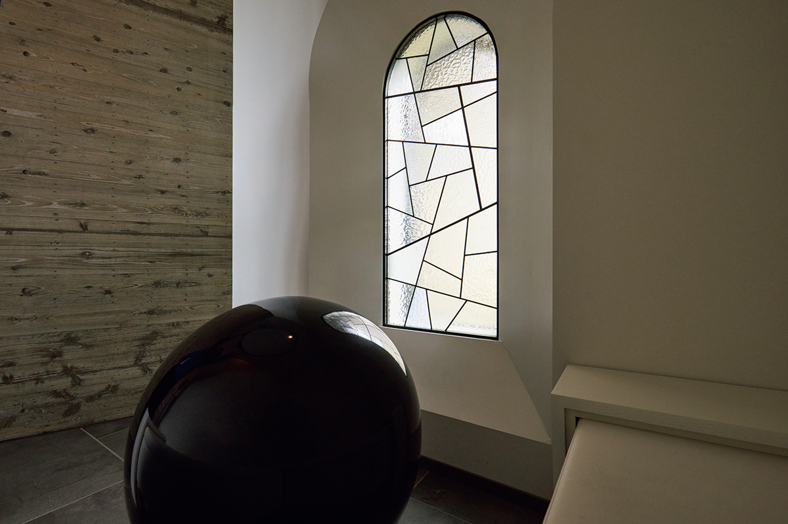
Интерьеры создал покойный дизайнер, который выбрал для отеля тему «Вид». Из лобби и номеров открывается панорама островов и лавового побережья Абундзэ, застывшего берега из чёрной вулканической породы.
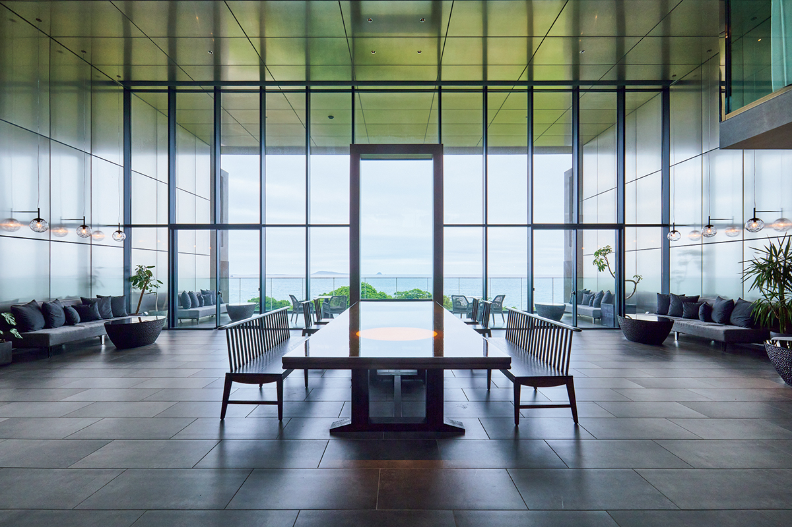
Goto Retreat ray by Onko Chishin
- Адрес
- префектура Нагасаки, Гото, Камисакияма-мати, 2877
- Телефон
- +81 959-78-5551
- Номера
- 26
- Цены / Вход
- от 55 440 иен за ночь с ужином и завтраком, с налогом и сервисным сбором
- Заезд / выезд
- 15:00 / 11:00
- Как добраться
- около 10 минут на машине от аэропорта Гото-Цубаки, около 15 минут от порта Фукуэ
Итог
Неспешное время островов
Дары моря, история веры и вещи, которые делают руками: всё это открывается, если проехать вдоль берегов Гото. И видно здесь больше, чем красивые пейзажи. На островах течёт неспешное время, а люди бережно хранят свои истории.
Острова Гото
- Как добраться
- самолётом из аэропорта Нагасаки до аэропорта Гото-Цубаки около 30 минут, из аэропорта Фукуоки около 40 минут; из порта Нагасаки до порта Фукуэ на судне на подводных крыльях около 1 часа 30 минут, на пароме около 4 часов; из порта Хаката (Фукуока) около 8 часов 30 минут
Фото: Косаку Китадзима.